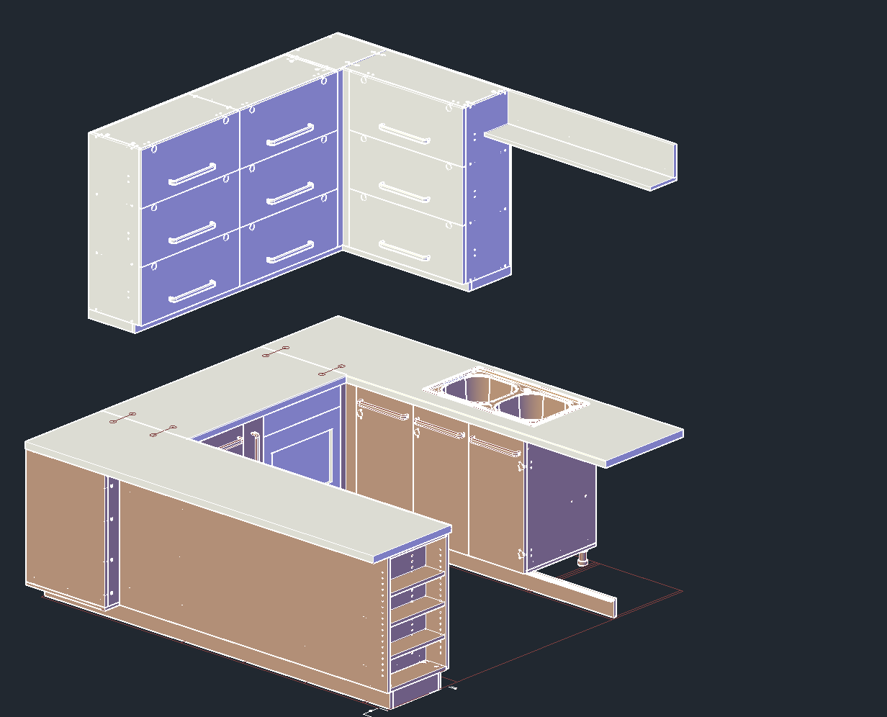
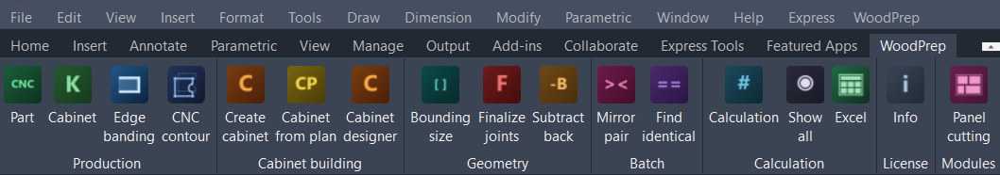
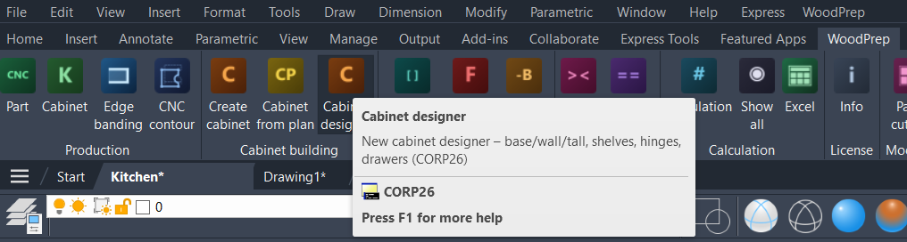
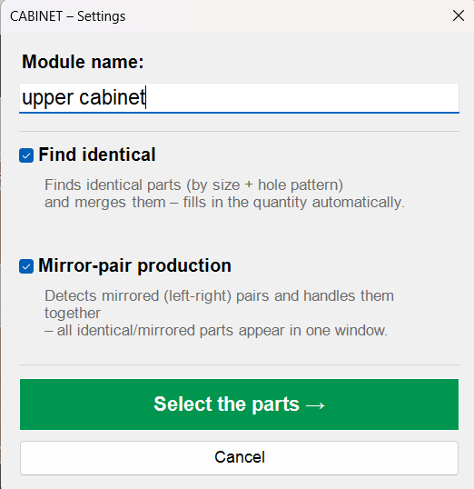
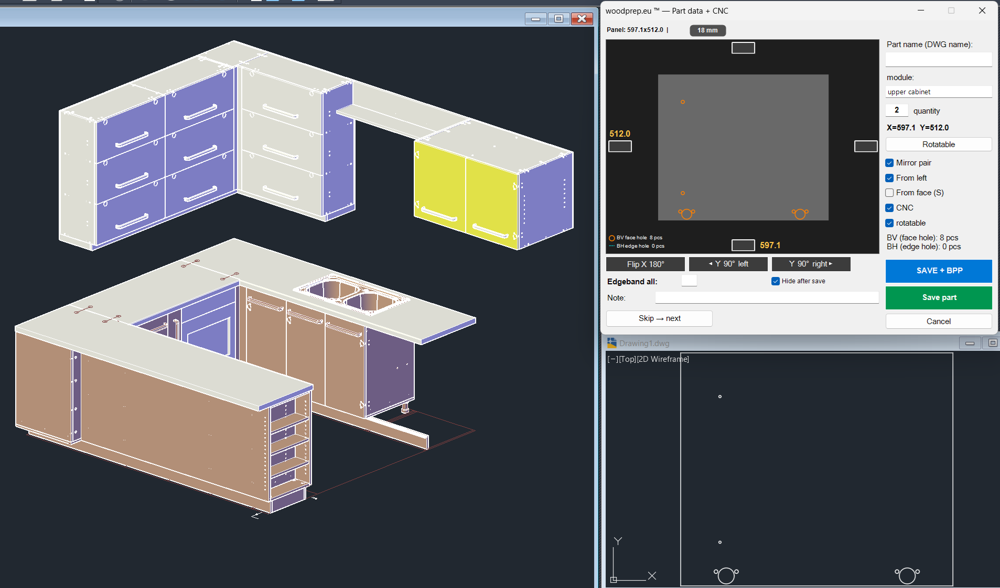
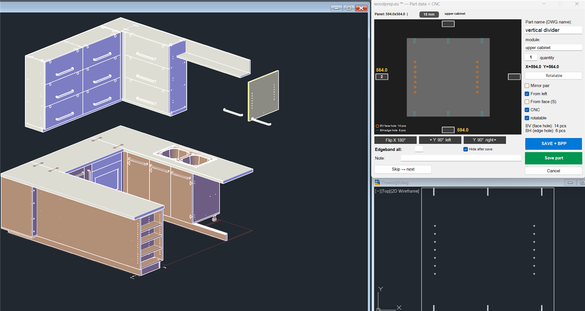
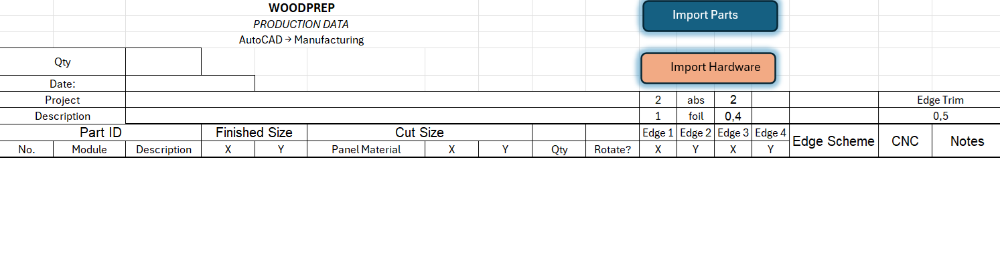
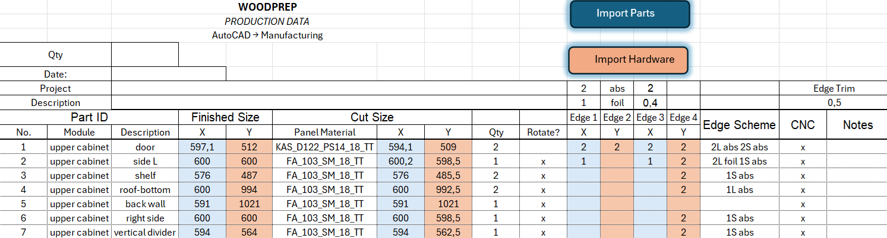
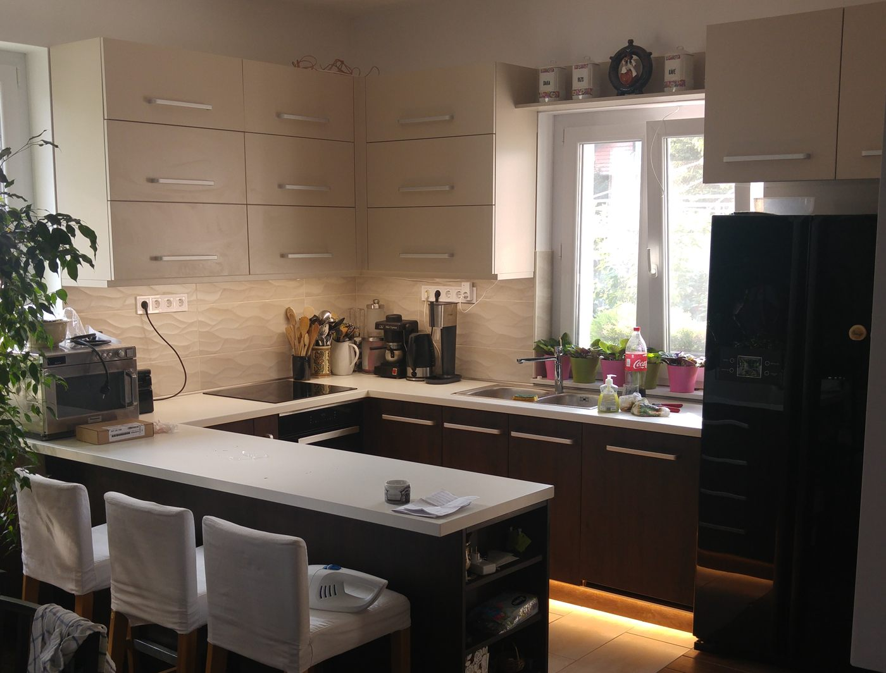

- 1
It starts with a sketch
A front view with the main sizes — the way every kitchen begins.
- 2
Your kitchen in AutoCAD
In the CAD you already know, with the WoodPrep tab. One cabinet is still missing — the wall unit on the right.
- 3
Type the sizes — that's all
Width, height, depth. Doors, hinges, shelves in the same window. No drawing.
- 4
Place — and it's there
The complete cabinet appears in the drawing: every panel, every hole, every hinge position.
- 5
Select it — get CNC + cutting list
WoodPrep walks every part: size, grain, edge banding, holes. Then the Excel cutting list.
- 6
It goes together perfectly
This kitchen was built exactly this way. Nothing missing, nothing drilled wrong.
Sketch · front view



AutoCAD + WoodPrep · one cabinet missing
CORP26 · cabinet designer
Place…








The real kitchen